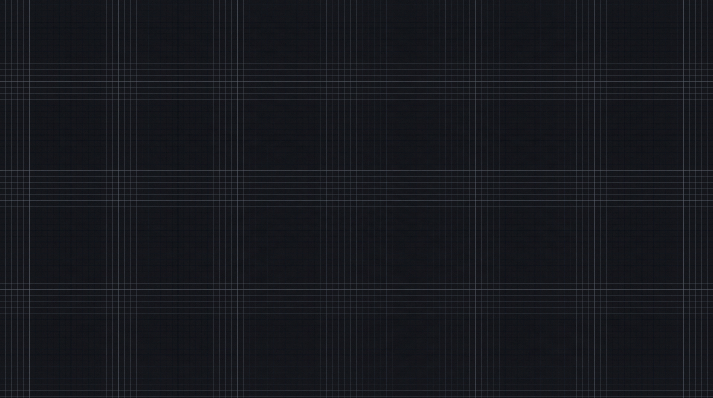

Vocea savantului — în engleză (o singură dată!)
Higgsfield nu are voci în română. Faci vocea o dată, generezi TOATE replicile de mai jos ca fișiere mp3 separate, și le folosești: unele doar ca ghid pentru tine la dublaj, una (Actul 2) chiar încărcată în Higgsfield ca să miște gura personajului.
Unde te duci
Site: elevenlabs.io → Voices → Voice Design
Copiază descrierea vocii, lipește-o acolo
După ce iese vocea
Salveaz-o cu numele exact: Savant ThermoSave.
Toate cele 5 replici — generează-le acum, pe rând, cu vocea de mai sus
Text to Speech → alegi vocea Savant ThermoSave → lipești → generezi → salvezi mp3-ul cu numele indicat.
💾 Salvează ca replica1_act1.mp3
💾 Salvează ca replica2_act1.mp3
💾 Salvează ca replica1_act2.mp3
💾 Salvează ca replica2_act2.mp3 — asta e cea importantă, o încarci direct în Higgsfield la Actul 2, ca să vezi gura mișcându-se.
💾 Salvează ca replica1_act4.mp3
Actul 3 (Peretele) nu are replică — e tăcere, doar imagine.
Actul 1 — Experimentul + Mecanismul
0:00–0:30
Începe cu standul (lămpi + probe), apoi trece în zoom macro pe mecanism (undele absorbite vs. reflectate). Personajul e mic, în fundal — nu trebuie să vorbească vizibil aici.
Poze de atașat în nanobanana, ÎN ORDINEA ASTA — poza #1 (keyframe START)

IMG1 fundalul IMG2 savant neutru
IMG2 savant neutru IMG3 lămpile
IMG3 lămpile💾 Salvează ca 1.png în 4-Act1-ExperimentSiMecanism
Poza #2 (keyframe FINAL) — nu ai nevoie de poze noi, doar de IMG1
💾 Salvează ca 2.png în același folder
În Higgsfield
START = 1.png · FINAL = 2.png · fără poze de referință suplimentare, fără audio.
Promptul video
Actul 2 — Cele trei căi + ε = 0,90
0:30–1:00
Cele 3 panouri, apoi savantul vine aproape de cameră, brațele încrucișate, ștampila verde. Aici trebuie să i se miște gura — are pas separat mai jos.
Poze de atașat în nanobanana — poza #1 (keyframe START, cele 3 panouri)
IMG2 savant neutru💾 Salvează ca 1.png în 5-Act2-CeleTreiCaiSiEpsilon
Poza #2 (keyframe FINAL, ε = 0,90, savantul aproape)
IMG2 savant brațe încrucișate IMG3 expresii/gura
IMG3 expresii/gura💾 Salvează ca 2.png în același folder
În Higgsfield
START = 1.png · FINAL = 2.png · fără poze de referință suplimentare pe partea vizuală.
Promptul video
- În Higgsfield, la aceeași generare, mai adaugi un fișier: replica2_act2.mp3 (cel generat la Pasul 0) — cu rolul audio reference (uneori apare ca „audio de referință" sau „driving audio").
- Asta face ca AI-ul să miște gura personajului exact după silabele din acel mp3, în timp real, când generează clipul.
- Dacă tot nu i se mișcă gura bine din prima, caută în Higgsfield tool-ul separat de Dubbing / Lip-sync, încarci clipul deja generat + alegi limba engleză — sincronizează gura peste orice sunet există în clip, ca a doua încercare.
Actul 3 — Peretele
1:00–1:30
Peretele în secțiune, 4 straturi, flux termic curgând. Fără personaj, fără replică — doar imagine, 30 de secunde pline de mișcare.
Poze de atașat în nanobanana
💾 Salvează ca 1.png în 6-Act3-Peretele
În Higgsfield
START = 1.png · fără imagine FINAL, fără poze de referință, fără audio.
Promptul video
Actul 4 — Cifra finală + Brand
1:30–2:00
Cele 2 probe (spații goale pentru cifre), apoi ecranul revine la fundalul curat, gata pentru numele THERMOSAVE.
Poze de atașat în nanobanana — poza #1 (keyframe START)
 IMG2 forma probelor
IMG2 forma probelor💾 Salvează ca 1.png în 7-Act4-FinalSiBrand
Poza #2 (keyframe FINAL) — nu mai generezi nimic nou
Folosești direct IMG1, adică 3-Fundal-comun/fundal_grafit.png — e deja exact ecranul gol de brand de care ai nevoie.
În Higgsfield
START = 1.png (probele) · FINAL = fundal_grafit.png (direct din folderul 3) · fără audio.
Promptul video
La final — montaj
După ce ai toate cele 4 clipuri video (2:00 în total):
- Le pui unul după altul, în ordine, cu o tranziție scurtă între ele.
- Adaugi manual, text scris de mână (nu AI):
ε = 0,90,ε = 0,10, temperaturile,Δ 83,1 °C, și la finalTHERMOSAVE. Toate cu virgulă românească. - Pentru Actul 2 (partea cu gura), dublezi în română peste englezul cu care ai sincronizat gura, cât mai aproape de aceleași silabe.
- Pentru celelalte replici (fără gură sincronizată), dublajul e mai liber, doar sincronizat pe cadru.
- Dronă gravă continuă pe tot filmul + impact sonor la finalul Actului 2 (ε) și la finalul Actului 4 (Brand).